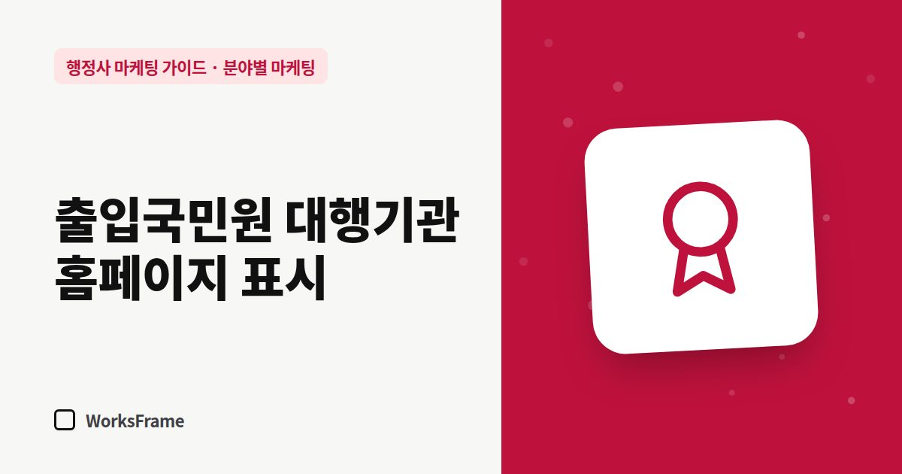

분야별 마케팅
출입국민원 대행기관 등록, 홈페이지에는 어떻게 보여줄까
한 줄 답
출입국민원 대행기관으로 등록했다면 그 사실을 소개·업무 안내·지도 정보에 정확히 적으세요. 단, 등록이 허가를 보장하는 것처럼 쓰면 안 됩니다.

외국인 고객이나 사업주가 출입국 업무를 맡길 때 가장 궁금해하는 것 중 하나는 “이 사무소가 정식으로 대행할 수 있는 곳인가?”입니다. 출입국민원 대행기관으로 등록했다면, 그 사실을 정확하게 보여 주는 것이 가장 강력한 신뢰 신호입니다.
2026년 9월 기준 요약입니다. 등록 요건과 준수사항은 반드시 최신 지침과 관할 출입국·외국인 관서 안내로 확인하세요.
출입국민원 대행기관 관리지침 요약
2021년 1월 제정된 법무부 행정규칙인 「출입국민원 대행기관 관리지침」은 출입국 민원 대행기관의 등록과 관리를 정합니다. 주요 내용은 다음과 같습니다.
- 등록 대상 — 변호사, 법무법인, 일반행정사, 행정사법인 등
- 교육 — 출입증을 받는 사람은 4시간 이상의 교육을 이수
- 대행 업무 — 체류자격 변경, 체류기간 연장 등 외국인의 출입국 민원 신청 대행
- 준수사항 — 대행 기록 3년 보관, 등록증 게시, 적정한 수수료, 공무 처리에 부당하게 관여하지 않기 등
- 점검과 제재 — 위반 시 업무 정지나 등록 취소 등
홈페이지에 표시하는 법
| 위치 | 표시 예 |
|---|---|
| 사무소 소개 | “법무부 출입국민원 대행기관 등록 행정사사무소” + 등록 정보 |
| 첫 화면 신뢰 영역 | 짧은 배지 문구 |
| 출입국 업무 안내 페이지 | 대행 가능한 업무 범위 설명 |
| 네이버 플레이스·구글 프로필 소개 | 한 줄로 |
등록증 사진을 올린다면 개인정보나 불필요한 정보는 가리세요.
하지 말아야 할 것
- 등록하지 않았는데 등록한 것처럼 보이는 표현
- 등록을 “허가 보장”처럼 연결하는 표현 — 대행기관 등록은 신청을 대행할 수 있다는 뜻이지, 결과를 보장한다는 뜻이 아닙니다
- 관서와 특별한 관계가 있는 것처럼 보이는 표현
등록 전이라면
등록 여부와 상관없이 할 수 있는 일(서류 작성, 절차 안내 등)과 대행기관 등록이 필요한 일을 구분해서 안내하세요. 업무 범위를 정확히 쓰는 것이 가장 안전합니다. (피해야 할 표현)
자주 묻는 질문
등록 정보를 홈페이지에 꼭 써야 하나요?
의무 여부는 지침을 확인해야 하지만, 고객 입장에서는 가장 궁금한 정보입니다. 사실 그대로 표시하는 것을 권합니다.
지침이 바뀌면 어떻게 알 수 있나요?
국가법령정보센터의 행정규칙 개정 이력과 관할 관서 공지를 주기적으로 확인하세요. 홈페이지 문구에 기준 날짜를 적어 두면 점검이 쉽습니다.